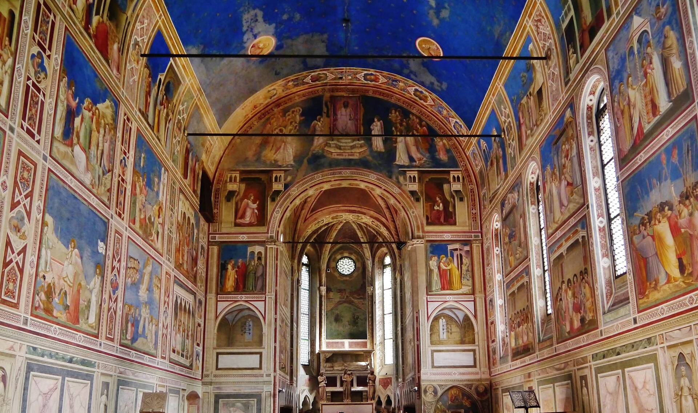

아직 펼치지 않은 카드
아직 펼치지 않은 카드
가장 긴 한 주 · 2유다의 입맞춤입맞춤하는 순간, 두 사람의 눈은 무엇을 말하고 있을까요?두 사람이 아주 가까이서 서로를 봐. 어떤 마음일까?
1305년 무렵이탈리아 파도바 · 스크로베니 예배당 남쪽 벽
유다의 입맞춤
1305년 무렵, 조토는 파도바의 작은 예배당 벽에 예수의 마지막 한 주를 차례로 그렸어요. 그 한가운데에 횃불이 흔들리는 밤, 유다가 예수를 감싸 안는 그림이 있어요. 어두워진 화면을 횃불로 비추며, 그 밤 동산에 있던 사람들을 하나씩 찾아 보세요.
옛날 이탈리아의 한 화가가 예배당 벽에 예수님 이야기를 차례로 그렸어. 깜깜한 밤 그림도 있대. 횃불을 들고 같이 비춰 볼까?
검수 전 시안이에요(기준서 1판). 장면에는 복음서와 미술사가들이 그림에서 짚은 것만 옮겼고, 풀이가 갈리는 곳은 그렇다고 밝혔어요. 상상은 ‘눈 감고 상상해 보기’에만 썼어요.
시안 확인용카드 단계 미리 보기
1
은을 받은 날
조토가 그린 스크로베니 예배당에는 예수의 마지막 한 주가 차례로 이어져요. 그 시작은 제단 앞 아치 왼쪽의 이 그림이에요.
유다가 대제사장 앞에서 흰 돈주머니를 쥐었어요. 마태복음은 그들이 유다에게 은 서른 닢을 주기로 했다고 적어요(26장 14~16절).

유다 등 뒤에는 검은 형상이 서서 그의 어깨에 손을 얹었어요. 누가복음은 이때 사탄이 유다에게 들어갔다고 적어요(22장 3절). 유다가 입은 노란 망토는 붙잡히던 밤의 그림에 다시 나와요.
유다가 돈주머니를 받고 있어. 뒤에 검은 그림자가 서 있어.
물어보기노란 옷을 기억해 둘까? 다음 그림에서도 찾아보자!
2
발을 씻긴 저녁
남쪽 벽 아래 줄로 가면 마지막 저녁 식사와 발을 씻기는 그림이 이어져요. 그 바로 다음 칸이 붙잡히던 밤의 그림이에요.
요한복음은 그 저녁 예수가 일어나 제자들의 발을 씻었다고 적어요. 누가 자기를 팔지 알고 있었다고도 적어요(13장 1~11절).

제자들 머리 둘레의 검은 원은 본래 은박이었어요. 은은 세월이 지나며 검게 변하지만, 예수의 금빛 둘레는 그대로예요.
한 미술사가는 뒤쪽 벽 앞에 앉은 세 제자 가운데 한가운데 사람을 유다로 봐요. 그의 둘레만 은박이 아니라 처음부터 어둡게 그려졌다는 거예요.
예수님이 무릎을 꿇고 제자의 발을 씻어 주셔.
물어보기누가 내 발을 씻어 준다면 어떤 마음이 들까?
3
횃불 아래
그날 밤, 예수는 제자들과 함께 기드론 시내 건너편 동산으로 갔어요. 유다가 무리를 이끌고 그곳에 왔어요(요한복음 18장 1~3절).
화면이 어두워졌어요. 손가락으로 문질러 횃불을 비추며 다섯 곳을 찾아 보세요.
어두운 밤 동산이에요. 손가락이나 마우스로 문질러 횃불을 비춰 보세요.
조토, 「유다의 입맞춤」, 1305년 무렵 · 남쪽 벽 아래 줄 · 조토 그림 · 퍼블릭 도메인 · 위키미디어 공용
빛이 닿으면 숨은 표시가 나타나요.
하늘은 낮처럼 파랗지만, 횃불과 등불이 밤이라고 알려 줘요. 사람들 머리 위의 검은 덩어리는 본래 은빛 투구였어요. 은박이 세월이 지나며 검게 변했어요.
예수는 베드로에게 칼을 거두라고 했어요(요한복음 18장 11절). 그러자 제자들은 모두 예수를 버려두고 달아났어요(마가복음 14장 50절).
그 밤 동산에 나도 있었다면, 무엇을 했을까요?
깜깜한 밤이야. 손가락으로 문질러서 횃불을 비춰 보자.
물어보기횃불에 제일 먼저 누가 보였어?
4
벽을 따라 이어지는 이야기
예배당 안에 들어서면 별을 박은 파란 천장 아래 그림이 세 줄로 둘러 있어요. 예수의 마지막 한 주는 이야기 그림의 맨 아래 줄을 따라 남쪽 벽에서 북쪽 벽으로 이어져요.
붙잡히던 밤은 남쪽 벽 아래 줄의 한가운데쯤에 있어요. 그 뒤로 대제사장 앞에 선 예수, 조롱당하는 예수, 십자가를 지고 가는 길, 십자가, 슬퍼하는 사람들, 부활의 아침이 차례로 이어져요.

조토는 겟세마네 동산에서 기도하는 장면을 그리지 않았어요. 발을 씻긴 다음 칸에서 곧바로 붙잡히던 밤으로 넘어가요.
예배당 벽에 그림이 줄줄이 있어. 이야기책처럼 차례로 읽는 거야.
물어보기그다음 그림에는 무슨 일이 있을까?
눈 감고 상상해 보기
올리브 나무 사이로 밤바람이 불어요. 멀리서 쇠붙이 부딪히는 소리와 여러 사람의 발소리가 다가와요. 횃불이 흔들리며 얼굴들을 비추었다가 다시 어둠에 묻어요. 한 사람이 다가와 인사를 건네고 입을 맞춰요. 둘레가 갑자기 소란해져요.
눈을 감아 봐. 깜깜한 밤 동산이야. 반짝반짝 횃불이 여러 개 다가와. 바스락바스락 발소리가 들려.
나의 자리
나는 누구에게 가장 가까이 다가가 있나요? 그 가까움은 진심인가요?
친구를 꼭 안아 줄 때 어떤 마음이야?
마음에 닿는 한 줄을 고르거나 직접 써 보세요. 한 줄을 남기면 이 자리의 도장이 찍혀요. 이 기기에만 저장돼요.
더 깊이
궁금한 칸만 펼쳐 읽어도 괜찮아요.
알고 보면
검게 변한 은박 조토는 제자들의 둘레와 병사들의 투구, 베드로의 칼, 발 씻는 대야에 은박을 입혔어요. 은은 공기에 닿아 검게 변해요. 그래서 지금은 투구가 검은 덩어리처럼 보여요. 예수의 둘레는 금박이라 변하지 않았어요.
파란 밤 이 예배당의 그림은 밤 장면에서도 하늘이 파래요. 조토는 하늘색 대신 횃불과 등불로 밤을 알려 줘요.
건너뛴 장면 마지막 저녁, 발 씻기, 붙잡힘, 대제사장 앞의 예수가 이어지고, 겟세마네 동산의 기도 장면은 없어요.
기록마다 다른 점
등을 보인 사람이 붙잡은 옷 마가복음 14장 51~52절의 달아난 젊은이로 보는 풀이가 있어요. 다른 제자의 옷으로 보는 사람도 있어요. 그림에 이름은 적혀 있지 않아요.
누가 무리를 이끌었나 마태복음과 마가복음은 대제사장들이 보낸 무리라고 적어요. 누가복음은 대제사장들도 함께 왔다고 적고, 요한복음은 군대와 대제사장들의 아랫사람들이 왔다고 적어요. 그 해의 대제사장 가야바가 직접 왔다는 말은 복음서에 없어요.
발 씻기 그림 속 유다 19세기 영국 비평가 러스킨은 유다가 이 그림에서 아직 제자의 표시를 지니고 있다고 썼어요. 오늘의 한 미술사가는 그의 둘레만 은박이 아니라 처음부터 어둡게 칠해졌다고 봐요.
그림과 함께 읽는 말씀
그리스도인들은 이 밤을 성목요일 밤으로 기억해요. 말씀은 뜻만 옮기고, 본문은 대한성서공회 개역개정으로 이어 드려요.
마태복음 26장 47~56절 유다가 대제사장들이 보낸 무리와 함께 와서 예수께 입을 맞춰요. 예수는 칼을 쓴 제자에게 칼을 도로 넣으라고 해요.
마가복음 14장 43~52절 제자들이 모두 달아나고, 홑이불을 두르고 따라가던 젊은이도 그것을 버리고 달아나요.
누가복음 22장 47~53절 예수가 종의 귀를 만져 낫게 해요.
요한복음 18장 1~11절 무리가 등과 횃불과 무기를 들고 동산에 와요. 귀를 베인 종의 이름은 말고예요.
직접 가 보기
확인한 날 · 2026년 11월 18일 · 바뀌기 쉬운 정보라 정기적으로 다시 확인해요
이탈리아 파도바 스크로베니 예배당은 1년 내내 오전 9시~오후 7시에 15분마다 들어가요(마지막 입장 6시 45분). 3월 25일~11월 1일에는 밤 7~10시에도 20분마다 들어가요(마지막 9시 20분). 12월 25·26일, 1월 1일은 닫아요.
반드시 미리 예약해야 하고, 당일 예약은 안 돼요(온라인은 24시간 전까지). 표를 받은 뒤 적힌 시각 5분 전까지 예배당 밖 냉방 대기실로 가요. 늦으면 들어갈 수 없어요. 안에서는 15분 동안 봐요.
표값은 일반 15유로, 6~17세와 학생 6유로, 5세 이하 무료이고, 모두 예약비 1유로가 붙어요. 해마다 벽화 점검으로 며칠 닫을 때가 있으니 가기 전에 공식 누리집 공지를 확인해 주세요.
다섯 곳 모두 비추기 금박
횃불로 그림 속 다섯 곳을 모두 찾으면 카드에 금박이 입혀져요.
횃불로 그림 속 다섯 곳을 모두 비추기
그 밤 동산에서 채색
둘 가운데 하나만 해도 카드가 채색돼요.
그 밤 나라면 어떻게 했을지 고르기
아이와 함께 ‘영화처럼 보기’를 끝까지 보기
근거 보기 (14)
- Richard Stemp, 106 – The Arrest of Christ(2020) — 남쪽 벽 아래 줄 한가운데쯤, 발 씻기 다음 칸, 노란 망토와 내민 입술, 앞만 보는 예수, 횃불과 등불로 밤을 알림, 분홍·금빛 옷의 대제사장, 은박 칼, 귀를 베인 종, 등 돌린 두건 쓴 사람과 분홍 옷(마가복음 14장의 젊은이일 수 있음), 검게 변한 은빛 투구
- Richard Stemp, 105 – Wash one another’s feet(2020) — 은박 대야와 둘레가 검게 변함, 뒤쪽 벽 앞 세 제자 가운데 어둡게 그린 둘레의 유다
- Richard Stemp, 103 – The Last Supper(2020) — 제자들의 둘레는 은박(검게 변함), 예수의 둘레는 금박
- Richard Stemp, 107 – Jesus in Custody(2020) — 발 씻기·체포·대제사장 앞으로 이어짐, 겟세마네 기도 장면 없음
- Smarthistory: Giotto, Arena Chapel(영상 대본) — 유다의 팔과 망토가 예수를 감싸고 붙잡음, 등을 보인 인물
- SUNY Oneonta 미술사 자료: Giotto, Arena Chapel — 수난 이야기는 제단 앞 아치의 「유다가 은을 받다」에서 시작해 남쪽 벽 아래 줄에서 북쪽 벽 아래 줄로 이어짐, 그 그림은 아치 북쪽
- Christian Iconography: Judas and the Chief Priests — 왼쪽의 사탄, 돈주머니
- Christian Iconography: Giotto, The Arrest of Jesus — 베드로가 종의 귀를 벰(요 18:10), 머리들로 가득한 무리
- M. Moleiro: Bible moralisée of Naples, Judas’ Kiss 해설 — 파도바 그림에서는 대제사장이 체포를 이끄는 모습
- John Ruskin, Giotto and his Works in Padua(1854) — 발 씻기 그림에서 유다가 아직 제자의 표시를 지님
- Oberlin College: Giotto, Arena Chapel 그림 차례 — 은을 받다·마지막 저녁·발 씻기·유다의 입맞춤·대제사장 앞·…·부활
- 스크로베니 예배당 공식 누리집: 여는 시간 — 9~19시 15분마다, 3월 25일~11월 1일 저녁 개방, 닫는 날
- 스크로베니 예배당 공식 누리집: 이용 방법 — 예약 필수·당일 예약 안 됨, 5분 전 대기실, 15분 관람, 늦으면 입장 불가
- 스크로베니 예배당 공식 누리집: 표값 — 15·11·7·6유로, 예약비 1유로
그림·사진·소리 출처
‘처음 만나는 기독교 문화’의 깊은 카드예요. 카드 단계와 남긴 글은 이 기기에만 저장돼요.